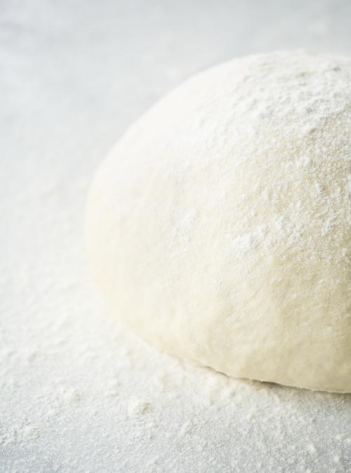

Pizza Dough
This is a quick and easy recipe for great pizza dough adapted from here.
Ingredients
- 250ml warm water
- 5ml instant yeast
- 5ml sugar
- 500ml flour
- 5ml salt
Method
- In a bowl, combine the water, yeast and sugar. Let stand until the mixture foams on top, about 5 minutes.
- Combine the flour and salt. Add the yeast mixture while stirring until a soft ball forms.
- Remove the dough from the bowl and knead for a few minutes on a floured surface to prevent sticking.
- Place in a lightly oiled bowl and cover with a clean cloth. Let the dough rise for about 30 minutes in warm and draft-free area.
- Makes enough dough for two individual pizzas.